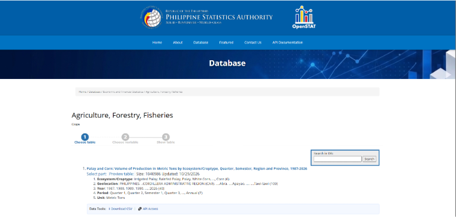
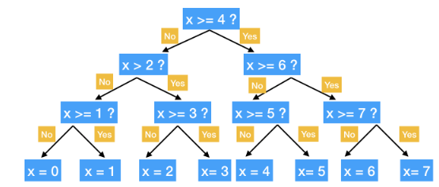
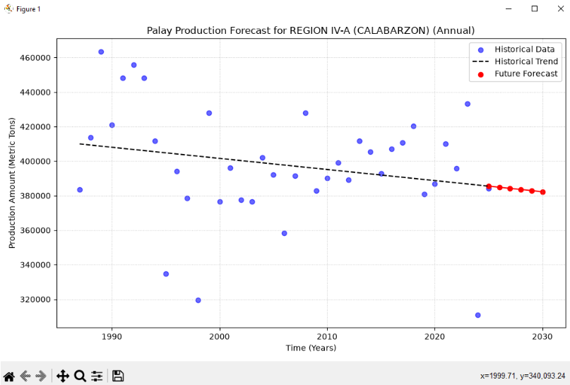
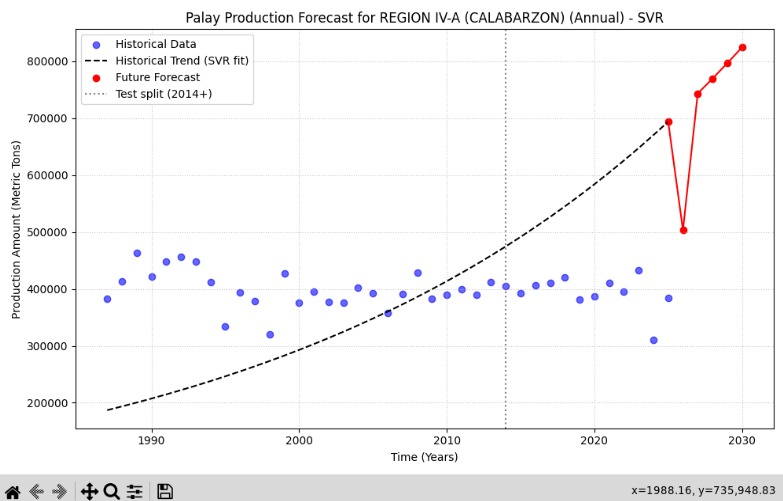
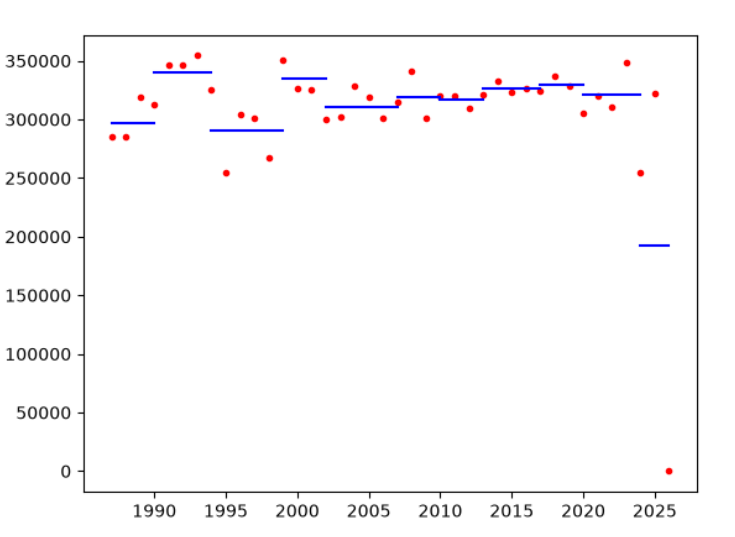
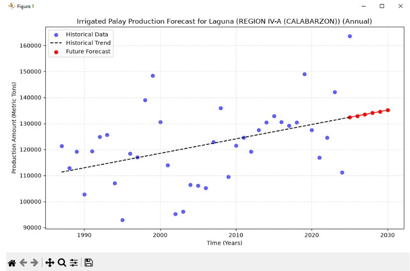
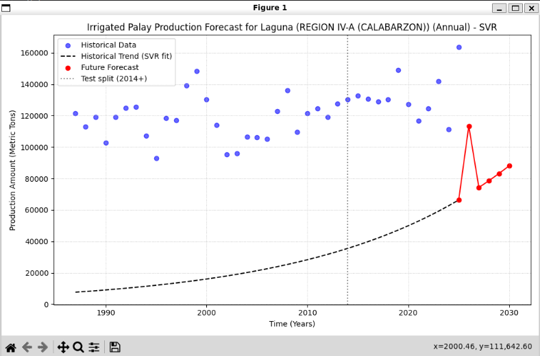
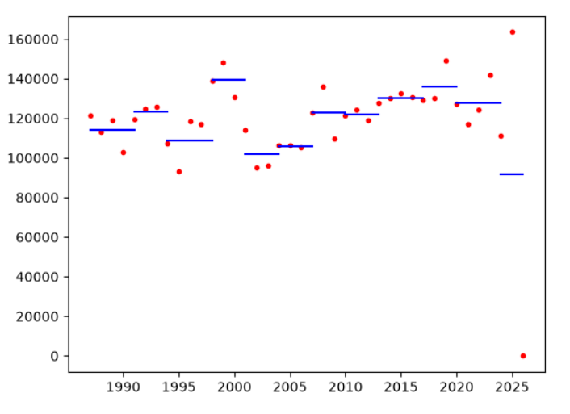

Palay (rice) is part of every Filipino's diet, while corn supports the regional food supply and livestock feed. Inaccurate yield forecasts hit local farmers the hardest through unstable prices and poor planning, while making it harder to secure food supplies and set import quotas.
Given a location (National, Regional, or Provincial), crop type, and reporting period (Annual, Semestral, or Quarterly), we aim to predict production volume in metric tons while minimizing the Mean Absolute Error (MAE).
Source: Philippine Statistics Authority (PSA) OpenStat — Palay and Corn: Volume of Production in Metric Tons by Ecosystem/Croptype, Quarter, Semester, Region and Province, 1987–2026.

Geolocation (National, Region, Province), Croptype, Year (1987–2026), and Period.
Linear Regression draws a single straight trend line through past crop yields over time using the closed-form
Normal Equation \(\hat{w} = (X^T X)^{-1} X^T y\) implemented from scratch with NumPy matrix operations. A column of
1s is prepended to \(X\) so the model solves for both the baseline intercept and annual slope simultaneously.
def linear_regression(X, Y):
X_array = np.array(X, dtype=float)
Y_array = np.array(Y, dtype=float)
X_rownum = X_array.shape[0]
# Prepend column of 1s to compute the intercept
ones = np.ones((X_rownum, 1))
X_b = np.hstack((ones, X_array))
# Normal Equation: w_hat = (X^T * X)^-1 * X^T * Y
X_transposed = X_b.T
X_transposed_dot_X = X_transposed.dot(X_b)
X_inverse_mat = np.linalg.inv(X_transposed_dot_X)
inverse_dot_trans = X_inverse_mat.dot(X_transposed)
w_hat = inverse_dot_trans.dot(Y_array)
return w_hat[0], w_hat[1] # intercept, slopeSVR fits a linear model \(\hat{y} = w \cdot x + b\) inside an \(\epsilon\)-insensitive tube (\(\epsilon = 0.05\)), penalizing only predictions outside the tube alongside L2 weight regularization (\(\lambda = 10^{-4}\)): $$J(w, b) = \frac{\lambda}{2}\|w\|^2 + \frac{1}{n}\sum_{i=1}^{n} \max(0, |y_i - \hat{y}_i| - \epsilon)$$
def train_linear_svr(X, y, epsilon=0.05, lam=1e-4, lr=0.01, epochs=1000):
n_samples, n_features = X.shape
w = np.zeros(n_features)
b = 0.0
loss_history = []
for t in range(epochs):
predictions = np.matmul(X, w) + b
errors = y - predictions
outside_mask = np.abs(errors) > epsilon
error_signs = np.sign(errors) * outside_mask
grad_w = (lam * w) - (np.matmul(X.T, error_signs) / n_samples)
grad_b = -np.mean(error_signs)
w -= lr * grad_w
b -= lr * grad_b
margin_loss = np.maximum(0, np.abs(errors) - epsilon).mean()
reg_loss = 0.5 * lam * np.sum(w ** 2)
loss_history.append(reg_loss + margin_loss)
return {'weights': w, 'bias': b, 'loss_history': loss_history}Our Regression Tree recursively partitions the chronological timeline by evaluating every candidate split index and selecting the split that minimizes the combined Sum of Squared Residuals (SSR) of the left and right partitions, stopping once a branch reaches the minimum leaf sample threshold (6 samples) and predicting the segment mean.

| Benchmark Slice (70% Train / 30% Test) | Linear Regression (MAE) | Support Vector Regression (MAE) | Regression Tree (MAE) | Lowest Error |
|---|---|---|---|---|
| National — Corn — Annual (Train) | 587,075.38 | 549,382.94 | 291,067.95 | Linear Regression |
| National — Corn — Annual (Test) | 439,963.82 | 561,172.93 | 1,278,417.80 | — |
| National — Palay — Annual (Train) | 570,643.39 | 1,047,498.09 | 779,823.50 | Linear Regression |
| National — Palay — Annual (Test) | 1,210,727.92 | 2,244,841.73 | 3,009,269.09 | — |
| Regional — Region IV-A — Palay (Train) | 23,640.17 | 131,204.85 | 19,081.22 | Linear Regression |
| Regional — Region IV-A — Palay (Test) | 30,147.39 | 183,166.25 | 62,087.65 | — |
| Provincial — Laguna — Irrigated Palay (Train) | 10,381.39 | 99,452.99 | 8,104.68 | Linear Regression |
| Provincial — Laguna — Irrigated Palay (Test) | 14,724.62 | 82,804.59 | 21,471.24 | — |






Discussion:
Conclusion:
shape & ones): numpy.org/doc/stable